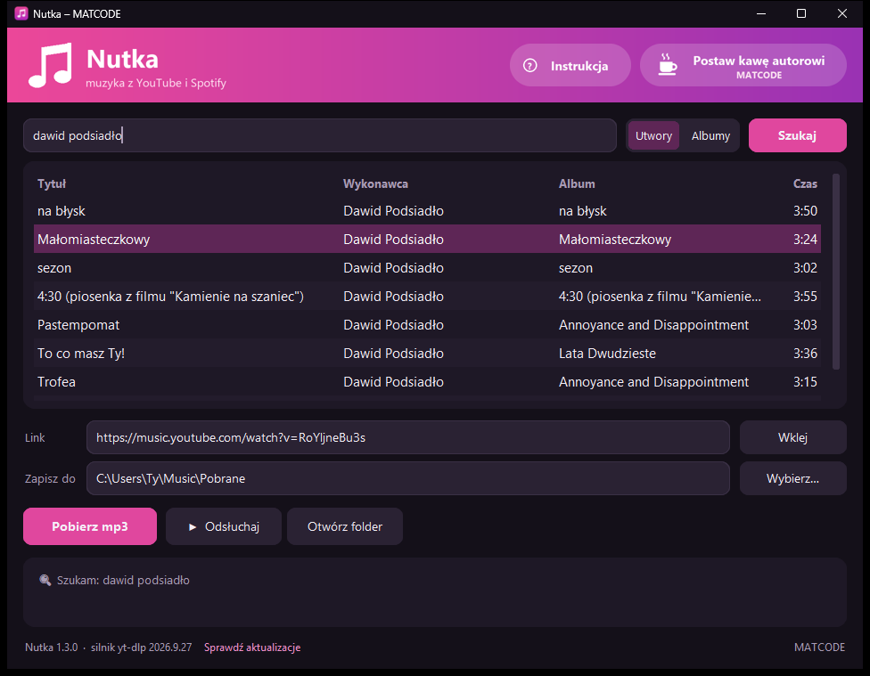
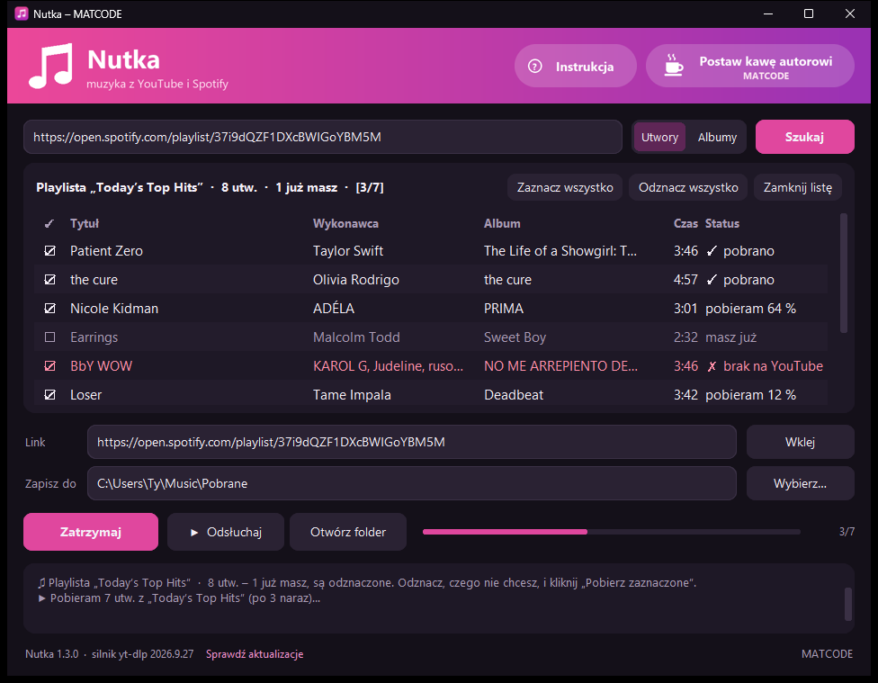

Instalacja
Zajmuje około minuty i nie wymaga uprawnień administratora.
- Pobierz plik Nutka-Setup.exe ze strony programu (przycisk „Pobierz dla Windows”) albo z GitHuba. Możesz go też skopiować od kogoś, np. na pendrivie.
- Kliknij go dwa razy i klikaj Dalej. Zaznacz „Skrót na pulpicie”, jeśli chcesz mieć ikonę na pulpicie.
- Na końcu zostaw zaznaczone „Uruchom Nutkę” i kliknij Zakończ.
Później Nutkę otwierasz z menu Start albo ze skrótu na pulpicie.
Windows pokazał niebieskie okno „System Windows ochronił ten komputer”?
Kliknij Więcej informacji, a potem Uruchom mimo to. To ostrzeżenie pojawia się przy każdym nowym programie bez płatnego podpisu cyfrowego i nie znaczy, że plik jest groźny. Kod Nutki jest w całości jawny na GitHubie.
Wymagania: Windows 10 lub 11 (64-bit), około 400 MB miejsca na dysku, internet do wyszukiwania i pobierania muzyki.
Okno programu

- Pole u góry
- Wpisz tytuł lub wykonawcę albo wklej link z YouTube lub Spotify i naciśnij Enter.
- Utwory / Albumy
- Czy szukasz pojedynczych piosenek, czy całych płyt.
- Lista wyników
- Klik zaznacza utwór, dwuklik od razu go pobiera.
- Link
- Adres zaznaczonego utworu. Możesz tu też wkleić link z YouTube przyciskiem Wklej.
- Zapisz do
- Folder na pliki mp3. Zmienisz go przyciskiem Wybierz….
- Pobierz mp3
- Pobiera to, co jest w polu „Link”. W trakcie pobierania obok pojawia się pasek postępu z procentami.
- ▶ Odsłuchaj
- Gra zaznaczony utwór bez pobierania. W trakcie zmienia się w ■ Stop, a obok pojawia się Następny ›.
- Otwórz folder
- Otwiera folder z pobranymi plikami w Eksploratorze.
- Okienko na dole
- Krótkie komunikaty: co się właśnie dzieje i czy się udało.
- Lewy dolny róg
- Numer wersji i link Sprawdź aktualizacje.
- Prawy górny róg
- Instrukcja otwiera tę stronę (także bez internetu), a Postaw kawę autorowi stronę, na której możesz dobrowolnie wesprzeć autora.
Wyszukiwanie i odsłuch
Wpisz tytuł utworu albo wykonawcę i naciśnij Enter albo Szukaj. Wyniki pochodzą z YouTube Music, więc trafiają w oficjalne wersje utworów. Przełącznik Utwory / Albumy obok pola decyduje, czy szukasz piosenek, czy całych albumów.
- Klik na wynik zaznacza go, a jego adres pojawia się w polu „Link”.
- Dwuklik na wynik od razu pobiera go jako mp3.
- ▶ Odsłuchaj puszcza zaznaczony utwór bez pobierania. Przy albumie gra cały album po kolei.
- W trakcie odsłuchu przycisk zmienia się w ■ Stop, a obok pojawia się Następny ›, który przeskakuje do kolejnego utworu albumu.
- Kliknięcie innego wyniku w trakcie odsłuchu od razu przełącza na nowy utwór.
Pobieranie mp3
Zaznacz wynik albo wklej link i kliknij Pobierz mp3. Pasek postępu pokazuje pobieranie, a w okienku na dole pojawia się tytuł i na końcu „Gotowe”.
| Co pobierasz | Skąd wziąć | Jak |
|---|---|---|
| Utwór | wyszukiwarka | dwuklik na wyniku albo zaznacz i Pobierz mp3 |
| Album | wyszukiwarka, przełącznik „Albumy” | jak wyżej – pobiera się cały album do podfolderu |
| Utwór z YouTube | link youtube.com/watch?v=… | wklej w pole „Link” (przycisk Wklej) i Pobierz mp3 |
| Playlista z YouTube | link youtube.com/playlist?list=… | wklej w pole „Link” i Pobierz mp3 |
| Utwór, album lub playlista ze Spotify | w Spotify: Udostępnij → Kopiuj link | wklej w pole wyszukiwania i naciśnij Enter – szczegóły niżej |
Pliki trafiają do folderu Muzyka \ Pobrane (C:\Users\<Ty>\Music\Pobrane). Folder zmienisz przyciskiem
Wybierz…, a otworzysz przyciskiem Otwórz folder. Album i playlista lądują w osobnym
podfolderze, album z numerami utworów.
Muzyka zawsze pochodzi z YouTube, także przy linkach ze Spotify: Nutka bierze ze Spotify tylko tytuł, wykonawcę i okładkę, a dźwięk pobiera z YouTube. Dlatego czasem trafi się inna wersja utworu, np. na żywo. Jakość to mp3 około 250–270 kbps.
Playlisty i albumy ze Spotify
Całą playlistę albo album pobierzesz w trzech krokach, a przy kolejnym razie Nutka dobierze tylko nowe utwory.
- W Spotify przy playliście lub albumie kliknij … → Udostępnij → Kopiuj link.
- W Nutce wklej link w pole wyszukiwania i naciśnij Enter. Po kilku sekundach zobaczysz listę utworów z ptaszkami.
- Odznacz to, czego nie chcesz (klik w ptaszek albo dwuklik na wierszu), i kliknij Pobierz zaznaczone.

- Przy każdym utworze widać jego stan: szukam, pobieram 64 %, ✓ pobrano albo ✗ błąd. Nutka pobiera po 3 utwory naraz; Zatrzymaj przerywa.
- Utwory, które już masz, są oznaczone masz już i odznaczone – wystarczy wczytać playlistę ponownie, żeby dobrać nowe.
- Jeśli coś się nie uda, te utwory zostają zaznaczone. Kliknij Pobierz zaznaczone jeszcze raz, żeby spróbować ponownie.
- Playlista trafia do podfolderu z jej nazwą, album – z numerami utworów. Pliki mają tytuł, wykonawcę, album i okładkę ze Spotify.
- Zamknij listę wraca do zwykłego wyszukiwania.
Nutka widzi tylko publiczne playlisty.
Prywatnych playlist i „Polubionych utworów” nie wczyta. Ustaw playlistę jako publiczną albo skopiuj utwory do publicznej.
Aktualizacje
Nic nie musisz robić – Nutka aktualizuje się sama. YouTube co jakiś czas zmienia swoją stronę, więc program przy każdym starcie i co 6 godzin sprawdza w tle, czy jest nowszy „silnik pobierania”, i po cichu go podmienia. Bez internetu albo gdy aktualizacja się nie uda, program działa dalej na dotychczasowej wersji.
Gdy pojawi się nowa wersja całego programu, Nutka pokaże okienko z opisem zmian. Kliknij Zaktualizuj teraz – program sam pobierze nową wersję, zainstaluje ją i uruchomi się ponownie (około minuty). Przypomnij później zamyka okienko do następnego uruchomienia, a Pomiń tę wersję nie będzie już o niej przypominać.
Ręcznie sprawdzisz to linkiem Sprawdź aktualizacje w lewym dolnym rogu okna. Obok stoi numer Twojej wersji.
Każde wydanie jest podpisane cyfrowo kluczem autora. Nutka sprawdza podpis i sumę kontrolną, zanim uruchomi instalator, i pobiera go wyłącznie z oficjalnej strony wydań na GitHubie.
Gdy coś nie działa
| Problem | Co zrobić |
|---|---|
| „System Windows ochronił ten komputer” przy instalacji | Więcej informacji → Uruchom mimo to |
| Antywirus blokuje instalator | w Zabezpieczeniach Windows: Ochrona przed wirusami i zagrożeniami → Historia ochrony → wybierz zablokowany plik → Akcje → Zezwalaj na urządzeniu; potem uruchom instalator jeszcze raz (inny antywirus: przywróć plik z kwarantanny) |
| Wyszukiwanie lub pobieranie nie działa | sprawdź internet; zamknij i otwórz Nutkę (przy starcie sama się zaktualizuje) |
| Jeden utwór się nie pobiera, reszta tak | ten film może być zablokowany na YouTube (np. ograniczenie wiekowe) – wybierz inny wynik |
| Ze Spotify przyszła inna wersja utworu | wyszukaj utwór w Nutce i wybierz właściwą wersję z wyników |
| Playlista ze Spotify się nie wczytuje | sprawdź, czy jest publiczna – prywatnych playlist i „Polubionych utworów” Nutka nie widzi |
| Wklejony tekst nie jest traktowany jak link | Nutka przyjmuje tylko prawdziwe adresy z YouTube i Spotify (zaczynające się od https:// albo nazwy strony); inny tekst trafia do wyszukiwarki |
Problem się powtarza? Przygotuj raport.
Otwórz folder programu (%LOCALAPPDATA%\Programs\Nutka), kliknij pasek adresu Eksploratora, wpisz cmd i naciśnij Enter,
a w czarnym oknie wpisz Nutka.exe --autotest > raport.txt. Plik raport.txt pokaże, czego brakuje – dołącz go do
zgłoszenia na GitHubie.
Odinstalowanie
Wejdź w Ustawienia → Aplikacje → Zainstalowane aplikacje, znajdź Nutkę i wybierz Odinstaluj. Program usuwa się w całości, razem z pobranymi aktualizacjami. Twoje pliki mp3 w folderze Muzyka \ Pobrane zostają.
Jeśli masz jeszcze starą wersję pod nazwą Maestro (Nutka to jej następczyni), odinstaluj ją w ten sam sposób.